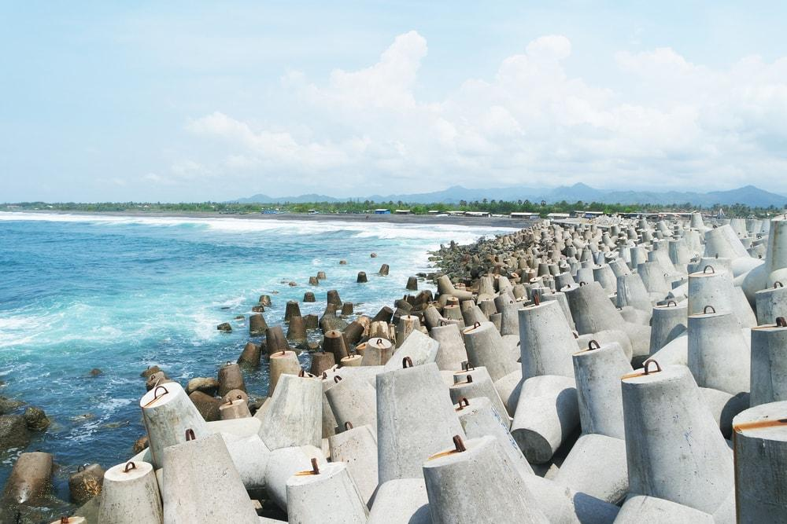

Sejarah Pantai Glagah Daerah Istimewa Yogyakarta dikenal sebagai salah satu wilayah yang mempunyai banyak sekali pantai yang tersebar dibeberapa kabupaten yang ada di provinsi ini, Kabupaten Bantul dan Gunungkidul menjadi dua kabupaten yang memiliki jumlah pantai terbanyak di Yogyakarta.Tetapi perlu sobat semua ketahui ternyata selain Kabupaten Bantul dan Gunungkidul ada satu lagi kabupaten di Yogyakarta ini yang juga memiliki destinasi wisata pantai, kabupaten yang dimaksud adalah kabupaten Kulon Progo. Terdapat satu pantai di Kulon Progo yang keberadaannya telah dikenal oleh banyak orang, baik oleh masyarakat Jogja sendiri maupun masyarakat luar Jogja, dan pantai yang dimaksud adalah pantai Glagah. Pantai Glagah sendiri merupakan salah satu destinasi wisata favorit di Kulon Progo atau bahkan bisa dibilang sebagai icon kota ini, meskipun beberapa tahun terakhir ini banyak destinasi wisata baru di Kulon Progo seperti Kedung Pedut, Kalibiru, dan masih banyak lagi, tetapi pesona Pantai Glagah tetap menjadi Primadona di kota ini. Banyak sekali keistimewaan serta keunikan yang dimiliki oleh pantai ini. Salah satunya yaitu adanya tetrapod atau sea wall yang berfungsi memecah ombak yang datang menghampiri bibir pantai, seperti telah diketahui oleh banyak orang Pantai Selatan Jawa memang dikenal memiliki ombak yang cukup ganas oleh karenanya dibangunlah tetrapod di Pantai Glagah ini. Tetrapod tersebutlah yang kemudian menjadi spot foto favorit di Pantai Glagah, selain itu juga terdapat dermaga yang letaknya menjorok ke laut, salah satu fungsi tetrapod tersebut juga untuk melindungi dermaga tersebut dari hantaman ombak. Selain tetrapod dan dermaga di Pantai Glagah ini juga terdapat laguna yang tidak semua pantai memilikinya, sebelumnya perlu sobat semua ketahui laguna merupakan cekungan yang kemudian terisi air sehingga, membentuk kolam alami. Jika pada umumnya laguna terbentuk karena batuan karang atau semacamnya, laguna yang ada di Pantai Glagah ini terbentuk karena cekungan yang masih bagian dari daratan yang kemudian terisi air laut pasang. |
Alamat yang bisa dituju : |
 |
Yangko Pak Prapto |